Pero en el Madrid ya sucedió la temporada pasada no le conceden demasiada importancia a esos detalles : quien va primero en solitario no necesita - basket average - , piensan.
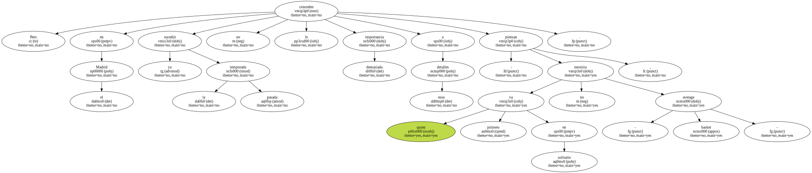- Quizá lo lamentemos más tarde - , reconocía Chechu Biriukov.
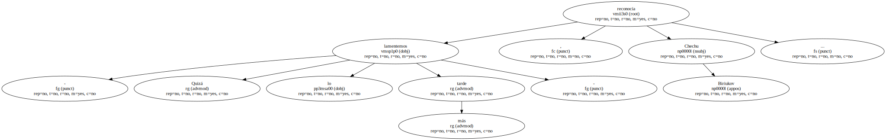De antemano estaba muy claro que el Barcelona tenía mucho más margen para mejorar.

En defensa , denegando el balón a los hombres altos del Madrid , cosa que tres días antes no había conseguido nunca , y eso que los blancos encestaban poco desde lejos y debería haber sido posible - flotar - con más eficacia sobre la pareja Sabonis-Arlauckas.
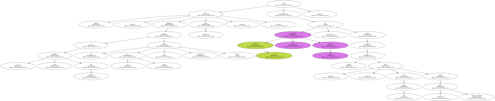En ataque , consiguiendo a la vez que todos los hombres mirasen a la canasta , que no sólo Fred Roberts encestase sus suspensiones y triples , y que se crease algo parecido a un ataque interior para equilibrar las cosas contra Sabas y hacerle cometer faltas.
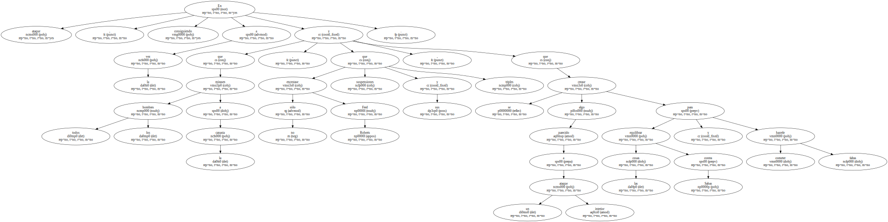El Madrid temía que su eficaz defensa , con un - líbero - como García Coll metido en la zona a robar balones , que fue posible tres días antes , ya no sería tan fácil ante unos - pequeños - barcelonistas bien aleccionados y que buscarían el tiro en vez de quedarse incomprensiblemente paralizados.

De ahí que Clifford Luyk presentase alineaciones clásicas.
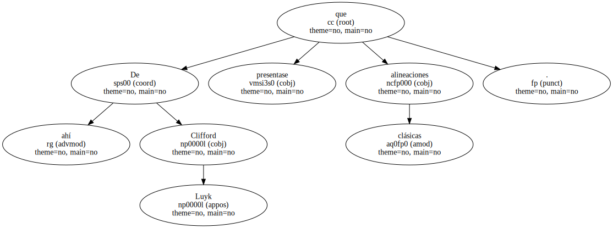Lo que sucede es que las múltiples adaptaciones que tenía que hacer Aíto tenían más miga que el retoque defensivo madridista ( que , por otra parte , funcionó bien ).
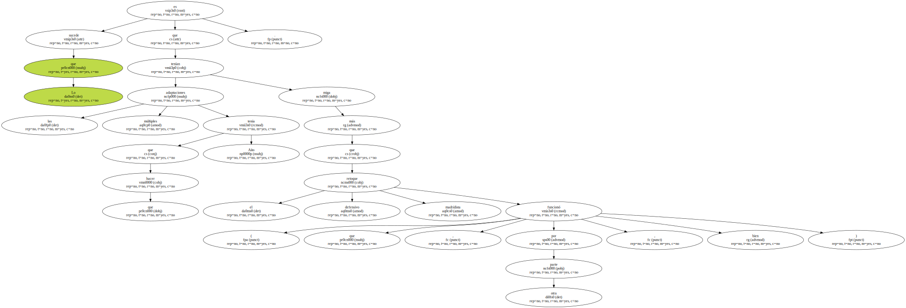Y la más previsible por todos , esa zona 2-3 para ahogar a los grandes , resultó de patio de colegio.
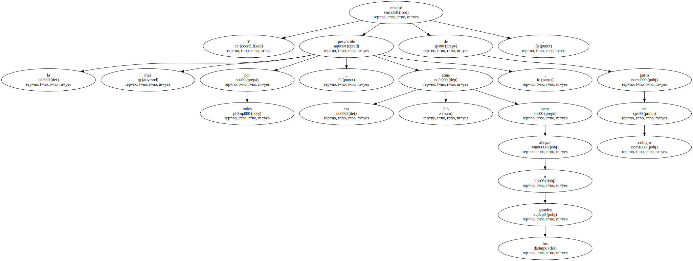- Por qué no la intentó Aíto en Madrid , donde no estaba Kurtinaitis y ningún blanco tiraba , y sí en Barcelona.
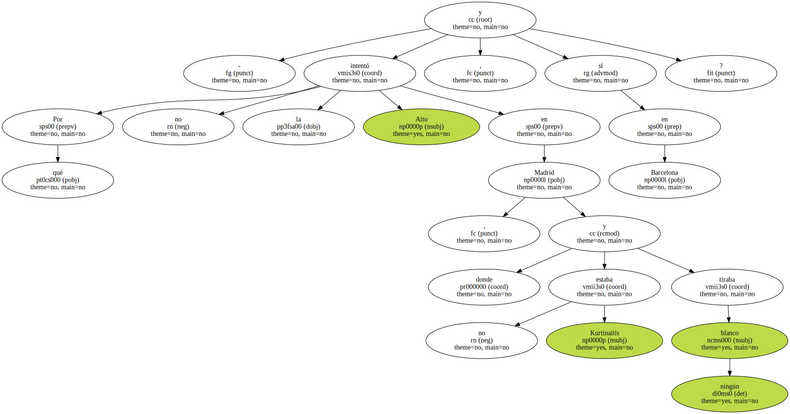Nunca sabremos la respuesta , pero sí que ahí se acabó el partido de ayer.
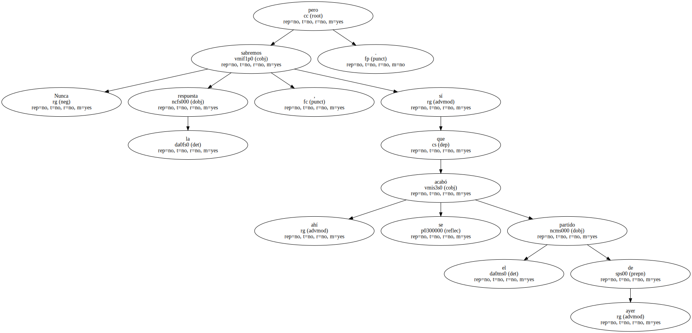Varios barcelonistas bajaron ostensiblemente los brazos Aíto se lo reprochaba apenas veladamente en el descanso , como diciendo - si también de lejos nos zurráis , más vale irse a casa -.
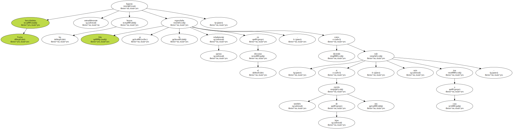Hay cosas que este Barcelona no podrá quizá nunca resolver contra un Madrid en buena forma.
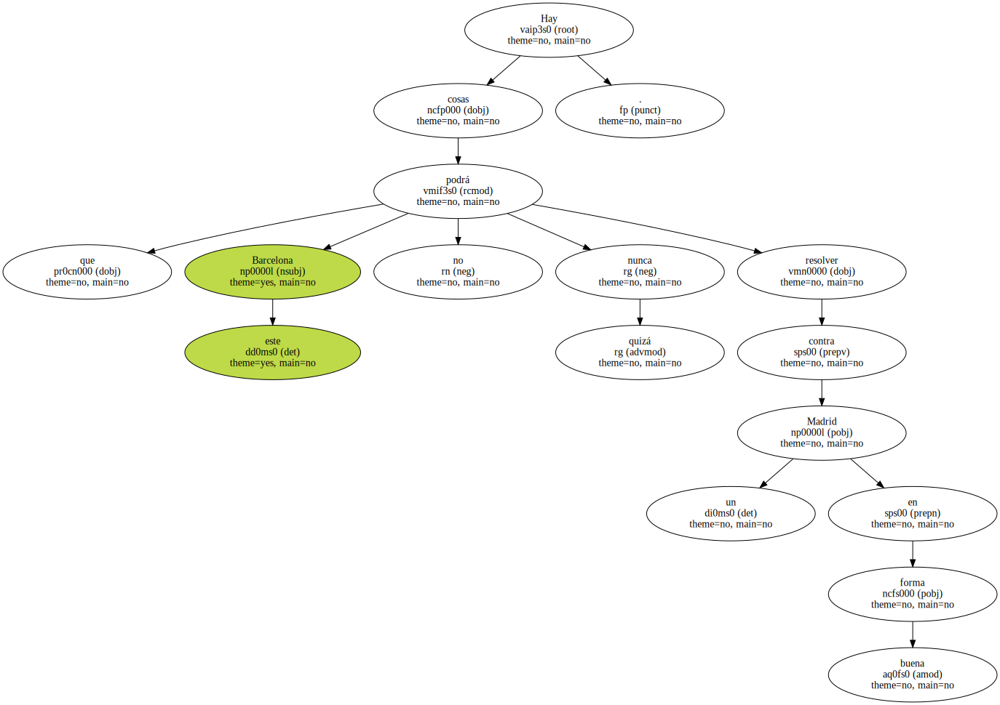Una , general : la falta de jugadores decisivos , hoy que Epi , ¡ ay ! , ya sólo puede ser un recurso táctico.
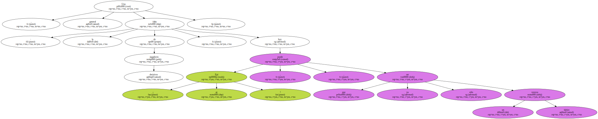Otra , más específica : con Norris y Savic había un verdadero juego interior en el conjunto blaugrana , pero con un Roberts que es un alero alto , pero endeble bajo los aros ( vean por ejemplo sus totales reboteadores ) , con un Massenburg potentísimo pero carente de un solo movimiento ofensivo de espaldas a la canasta , y con un Andreu de conocidas limitaciones , ya no existe ese juego interior en ataque.
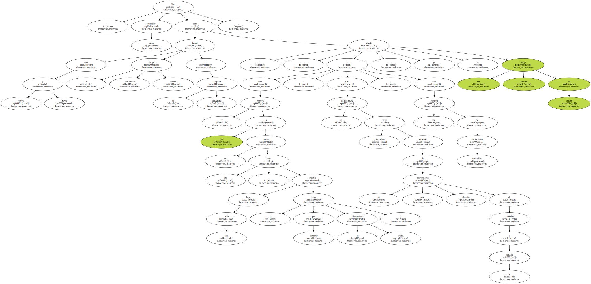Salvo contra equipos más pequeños en los que la mejor ( - la única ? ) arma barcelonista bajo el aro , que es el rebote ofensivo , pueda hacer estragos.
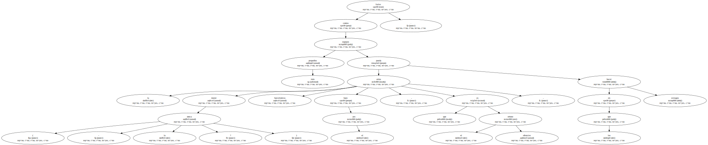